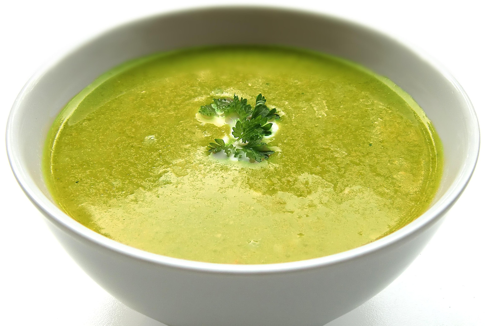

Caldo de Gallina

El clásico plato reconfortante de la cocina casera, famoso por sus
propiedades revitalizantes y su sabor profundo. Un caldo dorado,
sustancioso y lleno de sustancia que combina la riqueza de la gallina de
campo con hierbas aromáticas, verduras y tubérculos, ideal para combatir
el frío o reponer energías.
Ingredientes
- 1 kg de gallina criolla troceada en presas
- 3l de agua
- 4 papas peladas y cortadas en mitades
- 2 trozos de yuca
- 2 tallos de cebolla larga
- 1/2 cebolla cabezona blanca
- 4 dientes de ajo machacados
- 1 manojo pequenio de cilantro
- 1 zanahoria cortada en rodajas gruesas
- 1/2 cucharadita de comino molido
- Sal y pimienta al gusto
Preparacion
-
En una olla grande, coloca las presas de gallina junto con el agua, la
cebolla larga, la cebolla blanca, el ajo y la mitad del cilantro. Lleva
a fuego alto hasta que rompa a hervir.
-
Reduce el fuego a medio-bajo y retira con una cuchara la espuma o
impurezas que suban a la superficie durante los primeros minutos para
obtener un caldo limpio y claro.
-
Añade la zanahoria, el comino, sal y pimienta. Tapa la olla y deja
cocinar a fuego lento durante 45-50 minutos (o 25 minutos si usas olla
de presión), hasta que la carne de la gallina esté tierna.
-
Incorpora las papas (y la yuca o mazorca si las usas). Cocina a fuego
medio destapado durante 15 a 20 minutos más, hasta que las papas estén
suaves.
-
Retira el atado de cilantro y los trozos grandes de cebolla. Sirve la
presa de gallina con las papas en un plato hondo, baña con el caldo bien
caliente y decora con abundante cilantro fresco recién picado.
Sopas